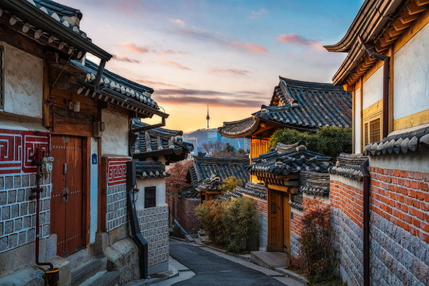
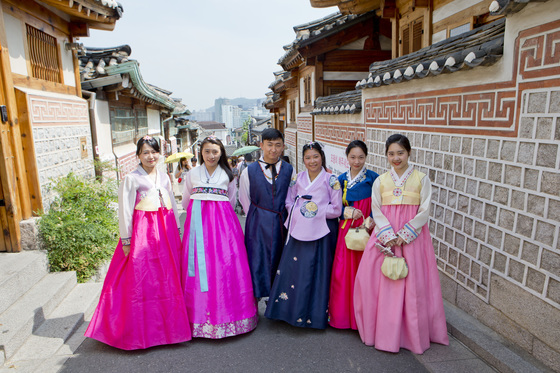
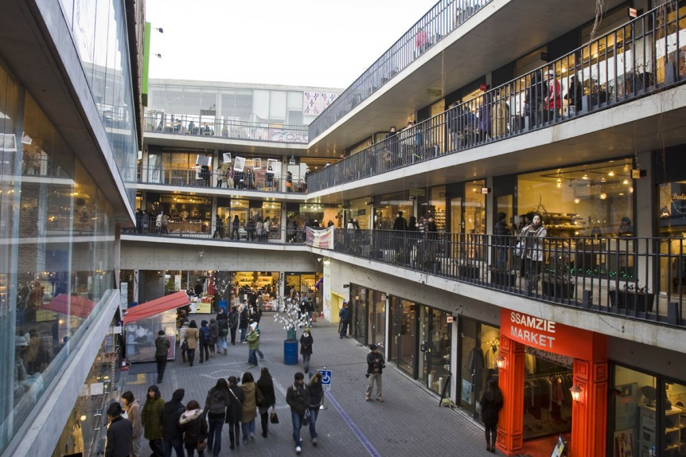
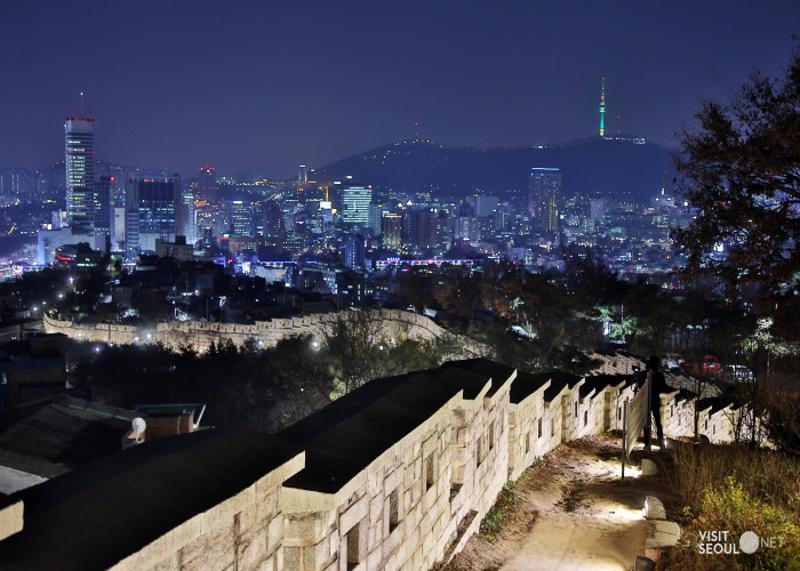
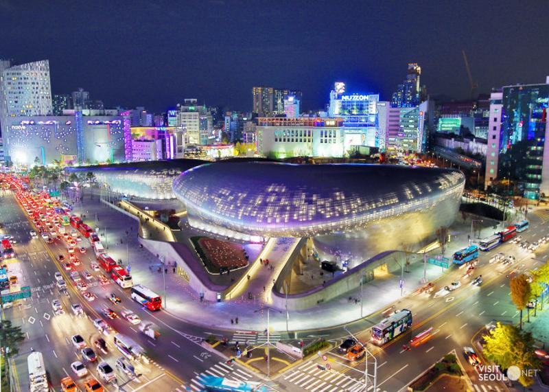

PLANS
Seoul, South Korea
한국의 전통과 현대 건축물 투어(식사 제외)
half day- PLAN
- 도심 곳곳에 자리잡은 멋스럽고 현대적인 건축물과 한국 역사와 전통이 남아있는 아름다운 건축물로 한국의 현대와 전통의 조화를 이룬 종로구 시티 투어
-
타입
solo couple friends family family with baby
-
예상경비
$
-
난이도
normal
- 위치 easy
- 교통 easy
- 소통 normal
- 체력 hard
-
1
안국역
3호선 안국역

 14min
14min
-
2
북촌 한옥마을
가장 한국스러운 골목
북촌한옥마을은 서울을 넘어 대한민국을 대표하는 전통골목이죠. 외국인에게 가장 잘 알려진 동네이고 많은 관광객이 찾는 곳이지만, 유명한 데에는 그만한 이유가 있어요. 한국의 얼을 느끼고 한국의 옛 모습을 알기에 이만한 동네도 없기 때문!
 -
3
북촌 일일 한복 대여 서비스
한복 대여해서 서울 거리 거닐기
17,400 KRW내 몸에 딱 맞는 한복을 입고 서울 거리를 거닐어보세요. 한복 착용시 수많은 관광지에서 무료 입장 혜택을 제공하고 있답니다.
https://www.klook.com/ko/activity/901-hanbok-rental-experience-seoul/?krt=s21&krid=a1c7dbfb-58d1-4f44-5483-7b076cb02372 4min
종로 02
4min
종로 02북촌한옥마을입구.정세권활동 정류장에서
종로 02 번을 타고 4개의 정류장을 가면 됩니다. -
4
쌈지길
전통의 길, 현대의 공간을 만나다
오랫동안 서울을 대표하는 전통 거리로 각광받은 인사동, 외국인들에게는 반드시 다녀가야 할 관광 코스이자, 내국인들에게는 맛과 멋을 찾아 숨어들기 좋은 종로의 골목길이었어요. 쌈지길은 이런 인사동의 고유한 색깔을 바탕으로 2004년 새롭게 탄생한 인사동의 명물이에요.
8min
-
5
낙산 공원
서울 야경 명소
역사의 흔적이 남아있는 성곽길을 따라 올라가면 아름다운 서울의 전경을 볼 수 있어요. 종로구에 위치한 낙산공원은 성곽을 따라 걸으며 산책도 하고 서울의 야경도 즐길 수 있는 일석이조의 야경 조망 명소이기도 해요.
17min
301 번낙산공원에서 걸어 내려와
혜화역.마로니에 공원 정류장
에서 서 301 번을 타고
8개의 정류장을 가면 됩니다.
-
6
동대문 디자인 플라자
혁신과 개발의 위해 디자인적 사고를 이용하기 위한 곳
디자인, 패션 산업의 다양한 문화 행사가 열리는 한국의 대표 복합 문화 공간이며, 세계의 디자인 경향과, 21세기 창조적 지식 탄생지로서의 디자인 혁신을 소개하고 있는 곳.